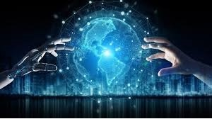

how is all use
Artificial intelligence generally falls under two broad categories:
Narrow AI: Sometimes referred to as "Weak AI," this kind of artificial intelligence operates within a limited context and is a simulation of human intelligence. Narrow AI is often focused on performing a single task extremely well and while these machines may seem intelligent, they are operating under far more constraints and limitations than even the most basic human intelligence.

Artificial General Intelligence (AGI): AGI, sometimes referred to as "Strong AI," is the kind of artificial intelligence we see in the movies, like the robots from Westworld or Data from Star Trek: The Next Generation. AGI is a machine with general intelligence and, much like a human being, it can apply that intelligence to solve any problem.
ARTIFICIAL INTELLIGENCE EXAMPLES
Smart assistants (like Siri and Alexa)
Disease mapping and prediction tools
Manufacturing and drone robots
Optimized, personalized healthcare treatment recommendations
Conversational bots for marketing and customer service
Robo-advisors for stock trading
Spam filters on email
Social media monitoring tools for dangerous content or false news
Song or TV show recommendations from Spotify and Netflix
Narrow Artificial Intelligence
Narrow AI is all around us and is easily the most successful realization of artificial intelligence to date. With its focus on performing specific tasks, Narrow AI has experienced numerous breakthroughs in the last decade that have had "significant societal benefits and have contributed to the economic vitality of the nation," according to "Preparing for the Future of Artificial Intelligence," a 2016 report released by the Obama Administration.
A few examples of Narrow AI include:
Google search
Image recognition software
Siri, Alexa and other personal assistants
Self-driving cars
IBM's Watson
Machine Learning & Deep Learning
Much of Narrow AI is powered by breakthroughs in machine learning and deep learning. Understanding the difference between artificial intelligence, machine learning and deep learning can be confusing. Venture capitalist Frank Chen provides a good overview of how to distinguish between them, noting:
"Artificial intelligence is a set of algorithms and intelligence to try to mimic human intelligence. Machine learning is one of them, and deep learning is one of those machine learning techniques."
Simply put, machine learning feeds a computer data and uses statistical techniques to help it "learn" how to get progressively better at a task, without having been specifically programmed for that task, eliminating the need for millions of lines of written code. Machine learning consists of both supervised learning (using labeled data sets) and unsupervised learning (using unlabeled data sets).
Deep learning is a type of machine learning that runs inputs through a biologically-inspired neural network architecture. The neural networks contain a number of hidden layers through which the data is processed, allowing the machine to go "deep" in its learning, making connections and weighting input for the best results.
Artificial General Intelligence
The creation of a machine with human-level intelligence that can be applied to any task is the Holy Grail for many AI researchers, but the quest for AGI has been fraught with difficulty.
The search for a "universal algorithm for learning and acting in any environment," (Russel and Norvig 27) isn't new, but time hasn't eased the difficulty of essentially creating a machine with a full set of cognitive abilities.
AGI has long been the muse of dystopian science fiction, in which super-intelligent robots overrun humanity, but experts agree it's not something we need to worry about anytime soon.